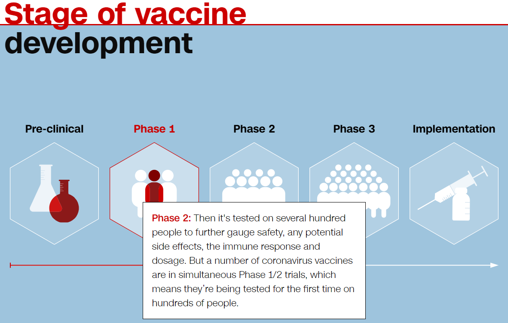
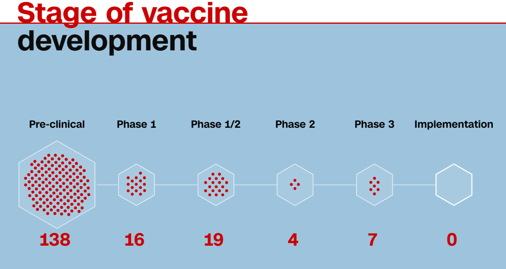
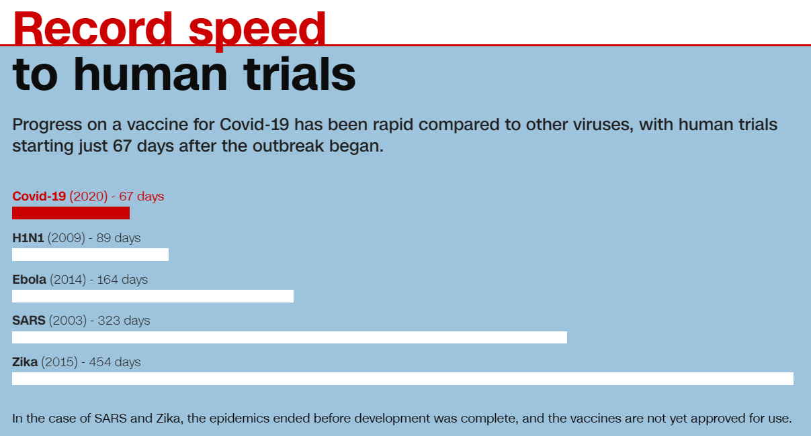

코로나-19 백신 개발 현황에 대한 CNN의 매우 좋은 기사 요약
게시: 2020-08-16T13:18:31+09:00
코로나-19 백신에 대한 인상적인 CNN 8월 14일자 기사를 읽었습니다. 뛰어난 인포그래픽과 함께 제공되는 매우 휼륭한 기사입니다.
edition.cnn.com/interactive/2020/08/health/coronavirus-vaccine-race-intl/
Inside the multibillion dollar race for a Covid-19 vaccine
The world is betting on one thing to stop the pandemic: A vaccine. This is what it will take to bring one to the masses — and the key players behind those efforts.
www.cnn.com
원래는 훨씬 긴 내용이니 본문을 읽어보시기 바라고, 그 중에서 흥미있었던 내용만 간단히 화면 캡춰와 함께 정리했습니다. - 여태까지 개발된 백신 중 가장 빨리 개발 완료된 것이 4년 걸렸다. 보통은 10년에서 15년이 걸린다. 지금 코로나-19 백신은 1년 이내에 만들기 위해 노력 중이다. - 현재 전세계적으로 수십억 달러에 달하는 자금이 백신 개발에 투입되고 있는데, 가장 큰 투자는 미국, 중국, 그리고 유럽에서 이루어지고 있다.
- 현재 과학자들이 기대하는 것은 백신 공급이 2021년 초에 이루어지는 것이다. 올해 안에 개발에 성공하더라도 대량 제조 및 유통, 그리고 여러가지 결정 문제가 남아 있기 때문에 시간이 걸린다. - 백신 개발은 원래 초기 연구 및 개발 과정과 1,2,3상의 임상시험을 거치게 되어있는데 각각의 임상단계는 2년 이상씩 걸리는 것이 보통이다. - 그러나 현재 코로나-19 백신은 빠른 개발을 위해 일부 임상단계를 통합해서 시행하거나 혹은 아예 생략하고 있다.

(1) 임상1단계 : 10~50명 정도의 사람에게 접종하여 안전성 여부를 판단 (2) 임상2단계 : 수백 명의 사람에게 접종하여 안전성과 함께 부작용, 면역체계의 반응, 적정 투약량 등을 조사. 현재 많은 백신이 1상과 2상을 통합해서 시험하는 중. (3) 임상3단계 : 다양한 나이대와 거주지에 걸친 수천 명의 사람들에게 접종하여 위약(placebo)을 맞은 사람들과 비교해서 바이러스에 대한 면역 반응을 조사. 여기서 바이러스에 대한 면역력을 주는지 여부가 측정됨. (4) 실시 : 당국이 임상 결과를 검토하고 백신 승인 및 양산 여부를 결정. 승인된 이후에도 추가로 임상4단계를 거치는 경우가 많음.

(위 그림은 백신 후보 약품의 숫자가 아니라 그 약품들의 시험 수입니다. 가령 임상3단계 시험 중인 백신은 6개, 그 임상 시험 숫자가 7개입니다.)
- 전세계적으로 총 29종의 코로나-19 백신이 인간을 대상으로 한 임상시험 중이며, 그 중에서 6종류가 7건의 임상3단계 시험을 거치고 있는 중이다. 3개는 중국 (2개 Sinopharm, 1개 Sinovac)에서, 1개는 영국 (옥스포드 대학과 아스트라제네카(AstraZeneca) 합작), 나머지 2개는 미국 (파이자(Pfizer)와 모더나(Moderna))에서 시험 중이다.
- 가장 먼저 인간을 대상으로 한 임상시험에 돌입한 것은 미국 바이오테크 회사인 모더나(Moderna)인데, 3월 16일, 즉 코로나-19 바이러스(SARS-CoV-2) 확인 이후 딱 2달 후의 일이다. - 바이러스 확인 이후 6개월 만에 임상3단계에 돌입한 것은 정말 신속하게 이루어진 것이다. 보통은 여기까지 오는데 6년 걸린다.

(바이러스별로, 발생 확인 이후 며칠만에 인간 대상 임상시험이 이루어졌는지에 대한 그래프입니다. 저 중에서 사스(SARS)와 지카(Zika) 바이러스는 백신이 완료되기 전에 전염병 유행이 끝났는데, 그 백신들은 아직도 사용 승인이 나지 않은 상태입니다.) - 어떤 나라들은 조속한 개발을 위해 효용성이 임상3단계에서 입증되기도 전에 백신 승인을 해주려고 하고 있다. 중국은 이미 6월말에 군부대 대상으로 실험용 백신을 사용 승인을 해주었다. - 러시아가 8월 11일 세계 최초로 일반 대중을 대상으로 스푸트니크(Sputnik V)라는 이름의 코로나-19 백신을 등록했는데, 이건 임상3단계를 아직 거치지 않은 것이다. - 미국이나 유럽에서는 그런 짓은 하지 않고 모든 안전성과 효용성 시험을 다 거치도록 하고 있는데, 일부 제약사들은 아직 승인을 거치지 않은 백신을 이미 생산하고 있다. 승인을 받으면 신속하게 배포하기 위해서이다. - 아스트라제네카는 미국과 영국을 비롯한 몇개국 정부와 계약을 맺고 최소 20억 회에 달하는 백신 접종량을 생산하기로 했다고 발표했는데, 첫 출하는 9월 중 가능할 것으로 보고 있다. - 이런 속도 때문에 많은 시민들이 백신 접종을 꺼리고 있다. 최근 CNN 여론 조사에 따르면 미국인들 중 코로나-19 백신이 나오면 맞겠다는 사람의 비율은 66%에 불과하다. - 모두가 백신을 맞는다고 다들 면역력이 생기는 것도 아니다. 많은 백신이 100% 효용성과는 거리가 멀다. - 가령 세계 최초로 개발된 말라리아 백신(RTS,S, 제품명 Mosquirix, 2015년 유럽 승인 취득)은 작년에 아프리카에 배포되었는데, 5~17개월 된 아기들에 대해서 면역 효과가 39%에 불과했지만 이 정도면 유용하다고 보고 배포된 것이다. - 미국 식품의약청(US Food and Drug Administration)은 코로나-19 백신이 유용하다고 판정을 받으려면 적어도 접종자의 50%는 보호할 수 있어야 한다고 말했다. 50% 정도면 다른 치료법 및 예방법과 병행할 때 전염병 확산을 막는데 도움이 될 수 있다고 보는 것이다. - 어떤 전문가들은 백신이 나와도 코로나-19는 퇴치되지 않고 독감처럼 그냥 관리 가능한 전염병으로 계속 남을 것이라고 예상한다. - 브리티쉬 컬럼비아 대학의 보건 전문가인 Heidi Tworek은 이렇게 말한다. "백신만 나오면 끝날 것이라는 생각은 위험합니다. 백신으로 제거된 질병은 딱 하나, 천연두 뿐인데 그나마 완전 퇴치에 수백년이 걸렸습니다." (역주 : 최초의 천연두 백신은 1796년 영국의 제너에 의해 개발되었고 마지막 천연두 발병은 1978년 영국이었으니까 거의 2백년 걸린게 맞네요.) - 여러 종류의 코로나-19 백신이 시간차를 두고 시장에 나올텐데, 꼭 처음 나온 백신이 제일 좋은 백신은 아닐 것이다. 에볼라 바이러스 백신도 그랬다. - 전세계 인구에게 코로나-19 백신을 접종하는 것은 의약품 공급망의 취약점을 드러낼 것이다. 가령, 그만한 접종량의 백신을 담을 만큼 충분한 수의 유리병(glass vial)은 현재 세상에 존재하지도 않고, 있다고 해도 그걸 채우고 포장할 공장도 충분치 않다. - 현재 각국은 그런 의약품 공급망을 확충하기 위해 돈을 쏟아붓고 있다. 미국은 자국내 백신 대량 생산 및 배포를 위해 15억불을 배정했다. - 백신 공급은 지정학적인 문제도 일으킬 것이다. 가령 2009년 돼지독감(swine flu)로 알려진 H1N1 독감이 유행할 때, 미국질병관리 본부는 이로 인해 약 57만5천명이 사망한 것으로 판단하는데, 그 백신이 나왔을 때 부유한 국가들이 그 백신 공급량을 모두 사재기해버렸다. 다행히 H1N1은 예상보다 피해가 심하지 않았고 일부 장년층은 그에 대해 면역력이 있었기 때문에 백신이 H1N1 제압에 결정적인 요소가 아니었다. 하지만 코로나-19는 이야기가 다르다. - 그런 사태를 막기 위해 WHO는 4월 29일 Access to Covid-19 Tools’ (ACT)라는 조약을 발동했는데, 이는 모든 사람들이 코로나-19 예방과 진단, 치료에 필요한 의약품과 장비를 받도록 하자는 것이었다. 그러나 두 나라, 미국과 중국은 거기에 서명하지 않았고, 약 1달 뒤 미국은 WHO를 탈퇴했다. - 6월 말, 미국 정부는 9월까지 생산되는 렘데시비르(remdesivir)의 전세계 공급량 거의 전부를 다 사재기 해버렸다. 이는 중증 코로나-19 치료에 효과가 있다고 알려진 최초의 약품이다. (이하 기사는 각국 정부의 움직임과, 효과적인 백신 개발과 보급을 위해 각국이 협력해야 한다는 호소를 담고 있습니다.) ** 이번주 나폴레옹 포스팅은 목요일에 나옵니다.